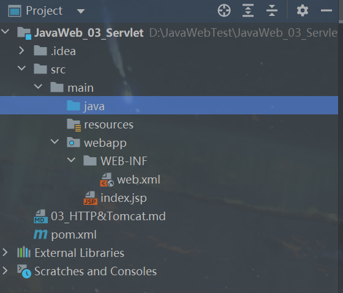
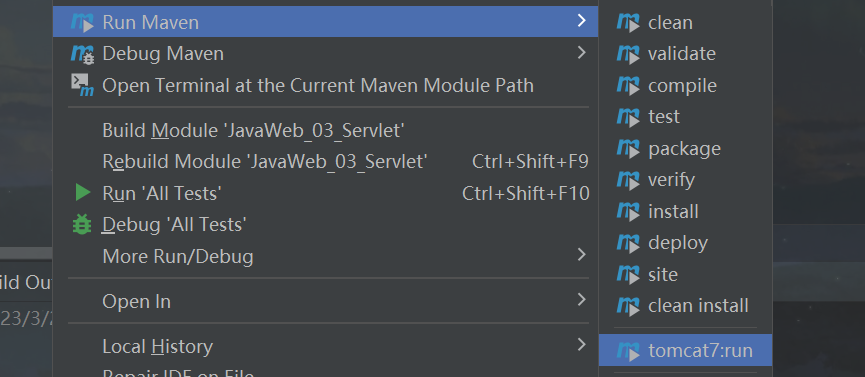

HTTP&Tomcat
今天记录一下HTTP协议和一种目前使用最广泛的轻量级web服务器——Tomcat！
JavaWeb
什么是Web
Web（World Wide Web）即全球广域网，也称为万维网，它是一种基于超文本和HTTP的、全球性的、动态交互的、跨平台的分布式图形信息系统。是建立在Internet上的一种网络服务，为浏览者在Internet上查找和浏览信息提供了图形化的、易于访问的直观界面，其中的文档及超级链接将Internet上的信息节点组织成一个互为关联的网状结构。
JavaWeb
B/S架构
Browser/Server，浏览器/服务器 架构模式，它的特点是，客户端只需要浏览器，应用程序的逻辑和数据都存储在服务器端。浏览器只需要请求服务器，获取Web资源，服务器把Web资源发送给浏览器即可。

B/S架构的好处:易于维护升级：服务器端升级后，客户端无需任何部署就可以使用到新的版本。
静态资源
静态资源主要包含HTML、CSS、JavaScript、图片等，主要负责页面的展示。但是由于做出来的这些内容都是静态的，这就会导致所有的人看到的内容将是一模一样。
动态资源
在日常上网的过程中，我们除了看到这些好看的页面以外，还会碰到很多动态内容。动态资源主要包含Servlet、JSP等，主要用来负责逻辑处理；动态资源处理完逻辑后会把得到的结果交给静态资源来进行展示，动态资源和静态资源要结合一起使用。
数据库
数据库(DB)主要负责存储数据。

整个web访问过程如下图所示：
(1) 浏览器发送一个请求到服务端，去请求所需要的相关资源;
(2) 资源分为动态资源和静态资源,动态资源可以是使用Java代码按照Servlet和JSP的规范编写的内容;
(3) 在Java代码可以进行业务处理也可以从数据库中读取数据;
(4) 拿到数据后，把数据交给HTML页面进行展示,再结合CSS和JavaScript使展示效果更好;
(5) 服务端将静态资源响应给浏览器;
(6) 浏览器将这些资源进行解析;
(7) 解析后将效果展示在浏览器，用户就可以看到最终的结果。
HTTP协议
超文本传输协议（HTTP）是一个用于传输超媒体文档（例如HTML）的应用层协议。 它是为Web 浏览器与Web 服务器之间的通信而设计的，但也可以用于其他目的。 HTTP 遵循经典的客户端—服务端模型，客户端打开一个连接以发出请求，然后等待直到收到服务器端响应。
Web服务器
浏览器按照HTTP协议发送请求和数据，后台就需要一个Web服务器软件来根据HTTP协议解析请求和数据，然后把处理结果再按照HTTP协议发送给浏览器。后续我们使用一款轻量级最popular的Tomcat服务器。
HTTP
HTTP简介
HyperText Transfer Protocol，超文本传输协议，规定了浏览器和服务器之间数据传输的规则。
- 数据传输的规则指的是请求数据和响应数据需要按照指定的格式进行传输。
- 如果想知道具体的格式，可以打开浏览器，打开开发者工具，点击
Network来查看某一次请求的请求数据和响应数据具体的格式内容：

HTTP协议特点
HTTP协议有它自己的一些特点，分别是:
基于TCP协议: 面向连接，安全
TCP是一种面向连接的(建立连接之前是需要经过三次握手)、可靠的、基于字节流的传输层通信协议，在数据传输方面更安全。
基于请求-响应模型的:一次请求对应一次响应
请求和响应是一一对应关系
HTTP协议是无状态协议:对于事物处理没有记忆能力。每次请求-响应都是独立的
无状态指的是客户端发送HTTP请求给服务端之后，服务端根据请求响应数据，响应完后，不会记录任何信息。这种特性有优点也有缺点：
- 缺点:多次请求间不能共享数据
- 优点:速度快
请求之间无法共享数据会引发的问题，如:
- 京东购物，
加入购物车和去购物车结算是两次请求， - HTTP协议的无状态特性，加入购物车请求响应结束后，并未记录加入购物车是何商品
- 发起去购物车结算的请求后，因为无法获取哪些商品加入了购物车，会导致此次请求无法正确展示数据
请求数据格式
请求行：请求方式
请求头：key-value格式
服务端可以根据请求头中的内容来获取客户端的相关信息，有了这些信息服务端就可以处理不同的业务需求
请求体：POST请求的最后一部分，存储请求参数
- GET请求请求参数在请求行中，没有请求体，POST请求请求参数在请求体中
- GET请求请求参数大小有限制，POST没有
响应数据格式
响应行：状态码、状态码描述
响应头：key-value
响应体：存放响应数据
- 200 ok 客户端请求成功
- 404 Not Found 请求资源不存在
- 500 Internal Server Error 服务端发生不可预期的错误
Tomcat
Web服务器
Web服务器是一个应用程序，对HTTP协议的操作进行封装，使得程序员不必直接对协议进行操作，让Web开发更加便捷。

Web服务器是安装在服务器端的一款软件，将来我们把自己写的Web项目部署到Web Tomcat服务器软件中，当Web服务器软件启动后，部署在Web服务器中的页面就可以直接通过浏览器来访问了。
Web浏览器的作用：①封装HTTP协议操作，简化开发；②可以将Web项目部署到服务器中，对外提供网上浏览服务。
因为Tomcat支持Servlet/JSP规范，所以Tomcat也被称为Web容器、Servlet容器。Servlet需要依赖Tomcat才能运行。Tomcat的官网: https://tomcat.apache.org/
基本使用
（这边暂时先省略不掌握）
Maven创建Web项目
新创建好的Web项目结构如下：
要注意pom.xml中的打包方式为
<packaging>war</packaging>，默认为jar。
IDEA使用Tomcat
Maven Web项目创建成功后，通过Maven的package命令可以将项目打包成war包，将war文件拷贝到Tomcat的webapps目录下，启动Tomcat就可以将项目部署成功，然后通过浏览器进行访问即可，但是这种方式非常不方便。
集成本地Tomcat
配置Tomcat属性

xxx.war和 xxx.war exploded这两种部署项目模式的区别：war模式部署成功后，Tomcat的webapps目录下会有部署的项目内容；war exploded模式部署成功后，Tomcat的webapps目录下没有，而使用的是项目的target目录下的内容进行部署。建议使用war模式进行部署。
Tomcat插件集成
还有一种更简单的方式，那就是直接使用Maven中的Tomcat插件来部署项目：
1、在pom.xml中添加Tomcat插件
1 | <build> |
2、使用Maven Helper插件快速启动项目，选中项目，右键–>Run Maven –> tomcat7:run
